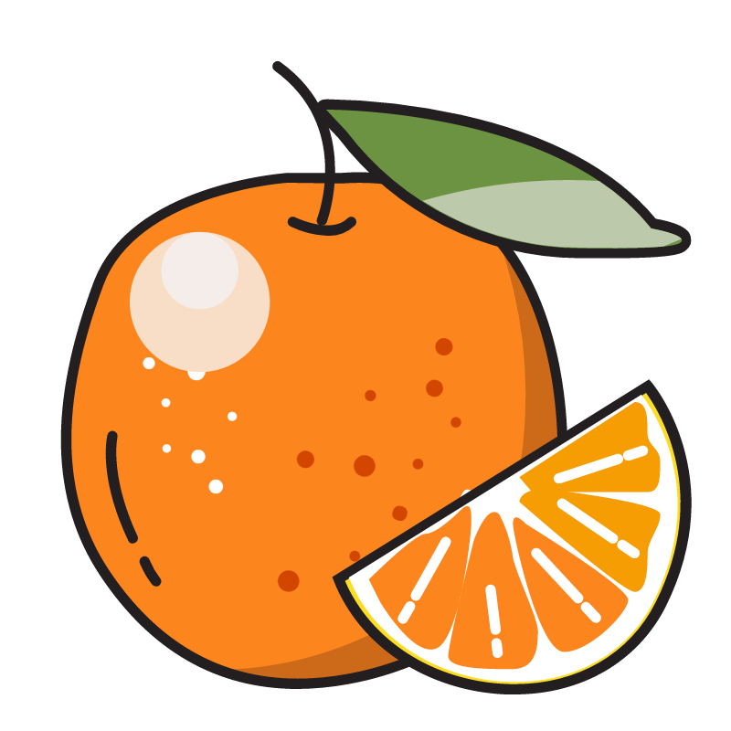

| 橙 子 |
Oranges
「摸鱼不是偷懒,是为了保持心态平衡」
Blog
About
你好，这里是橙子，普通的大学牲~
更多关于咱的信息请
点击这里
。
How lucky to meet you!
#
战斗力
HTML/CSS
PHP
JavaScript
摸鱼属性
搞事情
情感
社交
耐心
世界
#
咱生活的地方
Github
#
文章
Learn more...
#
作品
Message-Board
网页留言板程序,简单的前端和后端数据库交互项目
student-management-system
学生管理系统网页版-简单的网页与数据库交互程序
Student-dormitory
基于MySQL和简单前端的学生宿舍管理系统
Learn more...
橙子@Oranges
一切都是命运石之门的选择，顺其自然吧
©2024 Seirin | Made with love by Seirin | BG:
Pixiv